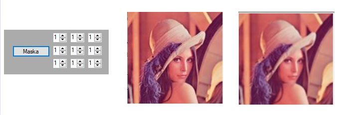
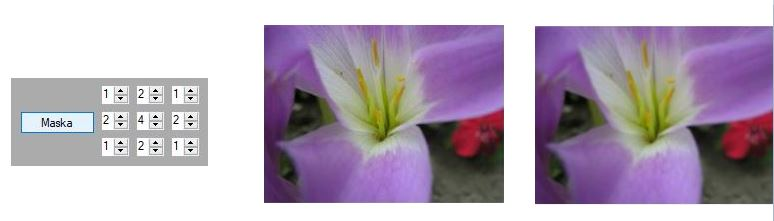
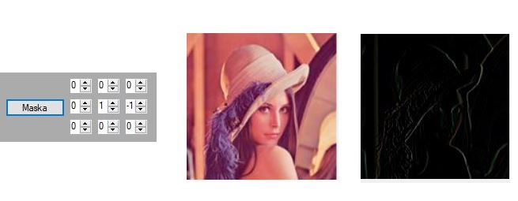
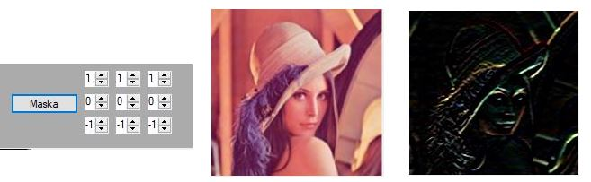
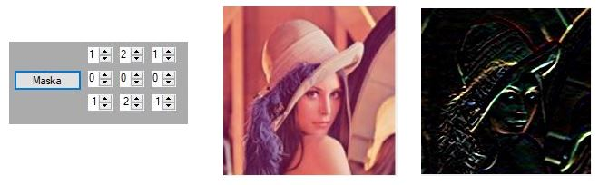

// Kod maski
private void button12_Click(object sender, EventArgs e)
{
// Przypisuję do zmiennych wartości kontrolek
dane.M1 = (int)numericUpDown3.Value;
dane.M2 = (int)numericUpDown4.Value;
dane.M3 = (int)numericUpDown5.Value;
dane.M4 = (int)numericUpDown6.Value;
dane.M5 = (int)numericUpDown7.Value;
dane.M6 = (int)numericUpDown8.Value;
dane.M7 = (int)numericUpDown9.Value;
dane.M8 = (int)numericUpDown10.Value;
dane.M9 = (int)numericUpDown11.Value;
Bitmap b1 = (Bitmap)pictureBox1.Image;
Bitmap b2 = (Bitmap)pictureBox2.Image;
Color k1, k2, k3, k4, k5, k6, k7, k8, k9;
int suma_maski = 0;
for (int i = 0; i < 3; i++)
{
for(int j = 0; j < 3; j++)
{
suma_maski += maska[i, j];
}
}
for (int i = 1; i < width - 1; i++)
{
for (int j = 1; j < height - 1; j++)
{
k1 = b1.GetPixel(i - 1, j - 1);
k2 = b1.GetPixel(i, j - 1);
k3 = b1.GetPixel(i + 1, j - 1);
k4 = b1.GetPixel(i - 1, j);
k5 = b1.GetPixel(i, j);
k6 = b1.GetPixel(i + 1, j);
k7 = b1.GetPixel(i - 1, j + 1);
k8 = b1.GetPixel(i, j + 1);
k9 = b1.GetPixel(i + 1, j + 1);
kk[0] = k1; kk[1] = k2; kk[2] = k3; kk[3] = k4; kk[4] = k5; kk[5] = k6; kk[6] = k7; kk[7] = k8; kk[8] = k9;
r = k1.R * dane.M1 + k2.R * dane.M2 + k3.R * dane.M3 + k4.R * dane.M4 + k5.R * dane.M5 + k6.R * dane.M6 + k7.R * dane.M7 + k8.R * dane.M8 + k9.R * dane.M9;
if (suma_maski != 0)
{
r = r / suma_maski; // normowanie
}
if (r > 255) r = 255; // obcinanie
if (r < 0) r = 0;
g = k1.G * dane.M1 + k2.G * dane.M2 + k3.G * dane.M3 + k4.G * dane.M4 + k5.G * dane.M5 + k6.G * dane.M6 + k7.G * dane.M7 + k8.G * dane.M8 + k9.G * dane.M9;
if (suma_maski != 0)
{
g = g / suma_maski; // normowanie
}
if (g > 255) g = 255; // obcinanie
if (g < 0) g = 0;
b = k1.B * dane.M1 + k2.B * dane.M2 + k3.B * dane.M3 + k4.B * dane.M4 + k5.B * dane.M5 + k6.B * dane.M6 + k7.B * dane.M7 + k8.B * dane.M8 + k9.B * dane.M9;
if (suma_maski != 0)
if (suma_maski != 0)
{
b = b / suma_maski; // normowanie
}
if (b > 255) b = 255; // obcinanie
if (b < 0) b = 0;
b2.SetPixel(i, j, Color.FromArgb(r, g, b));
}
}
pictureBox2.Refresh();




